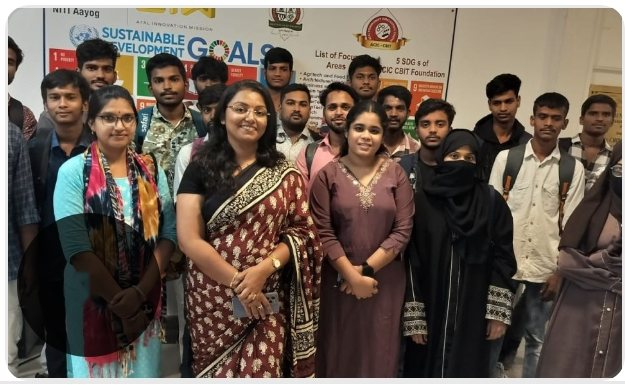

The situation
I led an engaging, hands-on session on "Understanding the Power of Digital Tools for Pitching" with the innovators of the Grassroots Innovation Program (GRIP) at the Atal Community Innovation Centre (ACIC) at CBIT.

What we did
We explored how digital storytelling, design thinking and visual communication can transform an idea into an influential pitch.
What I learned
The energy, curiosity and creativity of the participants made the session deeply rewarding. ACIC CBIT's commitment to nurturing young minds who can think, design and communicate with impact truly stands out.
Thank you to Dr. Sunny Agarwal and Velumula Srivaishnavi for the opportunity.